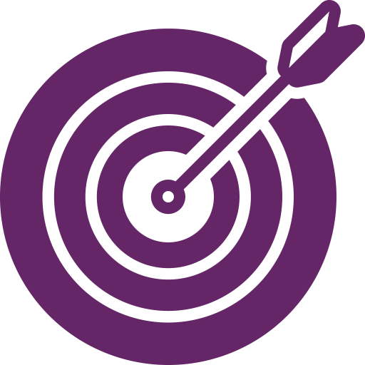

Choosing Your User Document Topic
The Assignment

Write step-by-step instructions and a cover memo.
Requirements
- Connect directly to your Informational Report topic.
- Address a different non-expert audience.
Audience a specific audience of non-expert readers and a specific situation
Purpose: Guide someone through a task.
Audience: Non-expert users who need to complete an action successfully.
🔁 What Stays the Same?
- Your semester-long topic
- Your community focus
- Your commitment to serving others
🔀 What Changes?
- The audience
- The purpose
- The outcome
asdfasdfasd adfasdf sad
✅ Quick Check
Ask yourself:
- Is this task directly related to my report topic?
- Is this written for a specific local group?
- Is this audience different from my report audience?
- Does this document help them complete a real task?
If the audience hasn’t changed, revise.
If the purpose is still explaining instead of guiding action, revise.
Your topic stays the same.
Your audience shifts from deciding to doing.